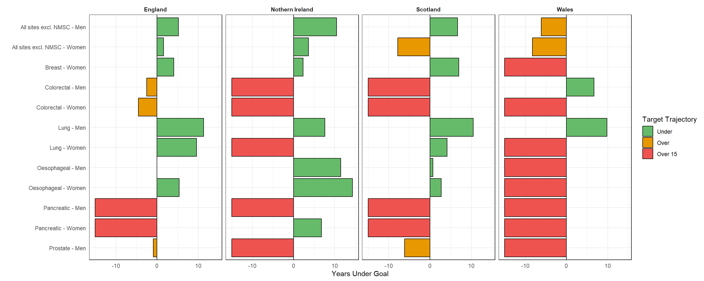

Final Position Paper Figures
Final plots for the ‘position’ paper. Organised by appearance.
Set-up
Packages
Filepaths
Visual Options
Functions
Here are functions for reading in data. They are specified by the data source as generally data is structured in similar ways. There are exceptions to this that have lead to individual functions.
Main
England Health Survey
England Health Survey (Diabetes Data)
Scottish Health Survey
National Survey for Wales
Health Survey Northern Ireland
Recent APC Table Function
Recent APC Barchart Function
Additional Wales Data
Additional Wales data has been included past the original 4 years. It it all loaded in this chunk so that data can be drawn from it when it is needed.
Plot Generation
Main
Figure 1
Figure 1 is a plot showing the trend of incidence rates for all cancers combined (excl. NMSC) by country
Figure 2
Figure 2 consists of four plots showing recent trends in APC by cancer site combined.

Supplement
Figure 1
Supplement Figure 1 consists of plotting cancer incidence for all sites of interest

Figure 2
Supplement Figure 2 consists of 3 graphs
Plotting parity over time
Plotting age at first birth over time
Plotting HRT usage over time
Parity

Age at First Birth

HRT

Figure 3
Figure 3 consists of two plots
Plotting Obesity trends by UK nation
Plotting Obesity trends in children in England
Obesity UK

Childhood Obesity England

Figure 4
Supplement Figure 4 is a graph showing the trends in doctor-diagnosed diabetes in the UK.

Figure 5
Figure 5 displays trends in drinking above guidelines

Figure 6
Figure 6 details trends in physical activity over guidelines

Figure 7
Supplementary Figure 7 contains 2 graphs
Plotting smoking prevalance over time
Plotting E Cigarette usage over time